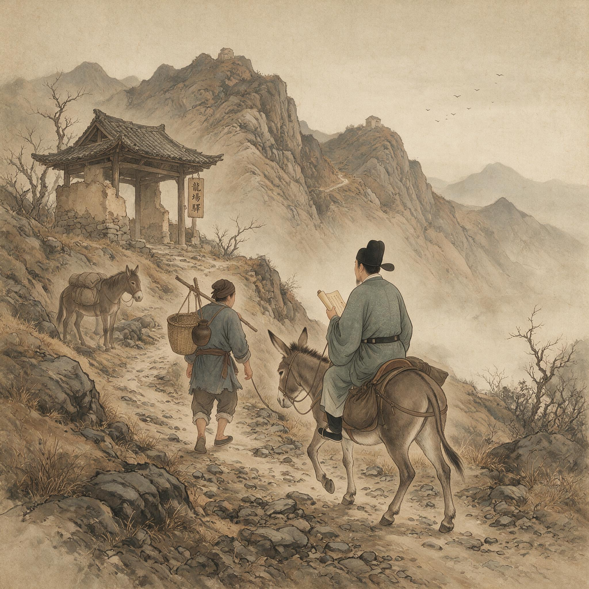

第 7 章
龙场石椁悟死生
那口石椁最先不是个物件，是堆石头。
正德三年的春天已经淹没了龙场驿前面那片空地，雨水把泥土泡得松软，脚踩上去能没到踝骨。王守仁从驿舍后面的山坡上捡来第一块石头的时候，老仆正蹲在门槛上嚼着半块干硬的糙米饼。石头被扔在泥地上，闷闷地响了一声，溅起的泥水沾上了他的袍角。他没有理会，转身又往山坡走去。第二块，第三块，第四块。他抱着石头走路的姿势笨拙而固执，靴子在泥里不断打滑，有一回整个人跪倒在地上，石头压住了他的手指。他抽出手来看了看——指甲盖下面渗出一道细细的血痕——然后站起来，继续搬。
这不是什么象征性的行为。他当时心里想的，恐怕不是什么哲学命题。他要造一口棺材。用石头造，因为这里木头潮湿，容易腐烂，虫蚁又多；因为石头的冷、石头的硬、石头的沉默，正好配得上他此刻对

明代官员持勘合文书在驿道跋涉
AI 生成插图，非史实影像。
死亡的理解。
这不是一时兴起。从京师诏狱到钱塘江，从福建海面到武夷深山，死亡的阴影已经追了他整整一年。在诏狱里，死亡是制度的一部分——有程序、有刑具、有时间、有人执行。在钱塘江上，死亡是瞬间的恐惧——水灌进耳朵和鼻腔，肺部像被火烧。在武夷山的虎穴旁，死亡是侥幸的逃过——那只虎没有扑过来，他不知道为什么。但在龙场，死亡变成了日常。它不再以戏剧性的姿态出现，而是弥漫在每一口呼吸的空气里，潜伏在每一碗喝下去的水中，附着在每一条被雨水泡得发胀的山路上。它是瘴气，是饥饿，是语言不通带来的孤立，是深山野兽在夜里的嚎叫，是随时可能出现在山口的那几个缇骑的身影。
面对这样的死亡，人可以有两种反应。一种是逃避：写求救信，讨好地方头人，寻找逃亡路线，把全部精力用在设法离开这座山谷上。另一种是投降：放弃一切挣扎，终日卧床不起，等死。王守仁选择了第三种。他要把死亡拉近，近到不能再近，近到可以躺在里面。他要用自己的双手为自己建造一座坟墓，然后住进去，看看会发生什么。
石椁的轮廓在泥地上一天天清晰起来。没有灰浆，没有凿子，没有任何专业的工具，他只是把石块按照大小和形状一层一层地叠上去，小的填在大的缝隙里，尖的用另一块石头敲掉棱角。这个长方形的石头盒子长不过七尺，宽不过三尺，高度到他膝盖的时候，他停下来看了看，然后继续往上加。
老仆起初只是旁观，后来大约是觉得让主人一个人干这种活实在说不过去，便也默默地加入了进来。两个人没有多少对话，只有石头碰撞的声音和粗重的喘息。附近的苗民路过时会停下来看一会儿，用他听不懂的语言相互交谈几句，然后走开。他们没有来帮忙，也没有来阻拦。在这个被朝廷遗忘的山谷里，一个汉人官员给自己造棺材，也许在他们看来并不比一个苗人巫师给自己搭祭坛更奇怪。
砌到第三层的那天傍晚，王守仁在石椁旁边坐了很久。夕阳从西边的山梁上斜射过来，把石头的影子拉得很长，一直伸到驿舍的土墙上。他的双手全是石粉和泥垢，几道新旧不一的伤口交错在指节上。他低头看着自己这双手——这双曾经握笔写过殿试策论的手，曾经在刑部案卷上批过朱笔的手，曾经在京师讲坛上翻过经典的手，现在正在为他建造坟墓。
这个念头让他笑了一下。不是苦笑，不是冷笑，而是一种从胸腔里自然涌上来的、不带任何表演成分的笑。这个笑本身就是一个值得注意的事实。一个人在给自己造棺材的时候还能笑出来，说明他对这件事的态度里有一种东西，既不是悲壮的赴死，也不是犬儒的麻木。那是什么？他自己也许还不能命名。但那个东西已经在石头的缝隙里开始发芽。
石椁砌好的那天下了雨。龙场的春雨不像江南那样温润绵密，它带着山里的寒气，一阵急一阵缓，打在石头上能溅起半尺高的水花。王守仁在石椁底部铺了一层干草，脱掉外袍，穿着贴身的旧衣，躺了进去。石头贴着他的后背，那种冷不是空气的冷，不是冰雪的冷，是从大地深处渗上来的、毫无生命气息的地气的冷。雨水从石缝间渗下来，一滴一滴落在他的脸上、颈上、胸口。他睁着眼，看着灰蒙蒙的天空在雨幕中渐渐暗下去；他闭着眼，听着雨打在石头上的声音，远处山涧的水声，更远处某种不知名的鸟一声接一声地叫着。
这不是象征性的“向死而生”。他没有在那个时刻构想任何哲学命题。他在体验——用身体体验，不是用头脑。后背贴着石头，石头贴着泥土，泥土下面是无尽的黑暗。他就是这个无尽黑暗上面薄薄的一层有机物，暂时还在呼吸，暂时还在心跳，暂时还能感觉到冷和湿和背部旧伤的隐痛。但这些“暂时”随时可能结束。不是“有一天会结束”的抽象认知，而是“可能就在今晚”的切实可能。
在这样的体验中，所有他曾经用来理解世界的概念都失效了。朱熹说理在事事物物中，要在竹木瓦石中逐一去格。他十八岁那年对着竹子格了七天七夜，格出了一场大病，没有格出任何理。那时他以为自己不够努力。后来他试过词章，试过佛经，试过道藏，试过在官场上做一个好官。每一次尝试都抱着同样的预设：答案在别处，在他还没有找到的那个地方，在他还没有读到的那本书里，在他还没有拜见的那位先生那里。这种向外求理的路径，事理无穷无尽，格之则未免烦累，最终只会让人精疲力竭。
龙场是一台无情的清除机器，把所有“别处”都清除干净了。这里没有书——带来的那几卷被雨水泡过，字迹漫漶不可辨认。这里没有师友——只有一个不识字的老仆，和言语不通的苗民。这里没有官场——龙场驿连需要他处理的公文都没有一封。这里甚至没有未来——如果连明天还能不能活着都不知道，那所有关于将来的规划都失去了意义。所有的“别处”都被堵死了。他只剩下自己。
但这个“自己”是什么？当他躺在石椁里，后背贴着石头，雨水打在脸上，他发现这个“自己”不是他曾经以为的那些东西。不是他的名字，不是他的功名，不是他的诗文，不是他的家世，不是他被所有人承认的那个社会身份。那些东西在龙场没有任何用处。苗民不知道进士是什么，瘴气不在乎他是不是刑部主事，锦衣卫的缇骑不会因为他出身余姚王氏就刀下留情。这些东西已经被龙场一层一层剥掉了，就像剥掉一棵树的树皮，露出里面白色的、脆弱的木质部。这个木质部就是这个还在呼吸的、还在感觉到冷和怕的身体，和寄居在这具身体里的那颗仍然在跳动的心。
而就在这个时候，一个关键性的反转发生了。这个反转不是他主动想出来的，是他的处境逼出来的。他发现自己虽然失去了一切，但仍然可以反过来看自己。他可以在恐惧的时候觉察到自己在恐惧，在疼痛的时候觉察到自己在疼痛。那个被觉察到的恐惧依然存在，石头依然是冷的，雨依然在下，死亡依然蹲在不远处的黑暗中。
但那个“觉察”本身——那个可以反过来看见恐惧的东西——它本身并不恐惧。它比恐惧更深，比疼痛更大，比死亡更不可剥夺。即使这具身体被石头压碎，被雨水泡烂，被野兽啃食，这个“觉察”也不会被触碰。不是因为它是永恒的——他当时根本没有余裕去思考永恒——而是因为它不在外部世界可以触及的那个层面上。外部的一切力量，不管多么强大，都只能作用于外部的东西。它们可以摧毁他的身体，但他的这颗心——就它作为自我觉察的那个最内核的意义而言——是无法被任何外在力量摧毁的。
他不知道自己在石椁里躺了多久。雨停了又下，下了又停。天黑了又亮，亮了又黑。他不记得自己睡过没有，也许睡着过，也许没有。
重要的是他从石椁里爬出来的时候，有什么东西已经不一样了。不是外面的世界不一样了——山还是那座山，瘴气还是那些瘴气，追杀的威胁还是那个威胁。不一样的是他看这些事物的方式。他不再试图从这些事物中找到“理”。竹子为什么是竹子，石头为什么是石头，瘴气为什么能致病，命运为什么把他抛到这个山谷里——这些问题还在，但它们突然不再紧迫了。紧迫的是另一个问题：他还活着。这颗心还在跳。这颗心——这颗此刻正在感觉到晨光的暖意、感觉到老仆在驿舍门口生起的炊烟气味、感觉到湿透的衣衫贴着皮肤的冰凉触感的心——本身就是他唯一能够完全拥有的东西。
这不是陆九渊说的那个“宇宙便是吾心”。陆九渊的话他读过，三十岁以前就读过了，但那句话在那个时候只是一句话。现在它变成一个事实，但变成的方式不是通过阅读和思考，是通过在石椁里睡了一夜之后身体记住的东西。他继承了陆九渊“心即是理”的思想，反对通过事事物物追求“至理”的“格物致知”方法，提倡从自己内心中去寻找“理”，认为“理”全在人“心”。
这个区别至关重要。后来不断有人说，阳明心学不过是孟子和陆九渊的注脚，核心概念在经典中早已有之，龙场的遭遇不过是偶然的触发条件。这个说法在文本层面上并非全无根据。王阳明后来在《传习录》中确实大量引用《孟子》的“万物皆备于我”“良知良能”来论证自己的立场，他给友人写信时也明确承认自己的学问与陆九渊一脉相承。如果只做文本对勘，确实可以把他的学说还原为一系列先验命题的重新组合。但文本对勘忽略了一个根本性的问题：为什么他在龙场之前读了三十年《孟子》，背得滚瓜烂熟，却没有提出“心即理”？为什么他在读到陆九渊文集的那些年里，并没有成为陆学的信徒，反而一度沉溺于佛老？
答案很简单，但也容易被忽视——经典文本的客观存在并不自动导致一种思想立场的诞生。一个人可以背得出圣贤的全部语录而依然没有任何属于自己的思想，因为那些语录在他的头脑里只是文字，不是生命经验。它们被储存在记忆里，在适当的场合被调用——在科场上调用来博取功名，在论学中调用来显示博雅，在困境中调用来安慰自己——但它们不是从骨头里长出来的。
要让它们从骨头里长出来，需要一种特殊的条件：所有外在的支撑都被拆除，所有替代性的方案都被证明无效，所有可以用来回避自己的活动都被中止。这个条件，在龙场之前的任何一个人生阶段都不曾具备。在京师时他不具备，因为那里有书、有师友、有官场、有一整套文化符号系统可以让他躲避在其中。在诏狱时他也不完全具备，因为诏狱虽然极端，却仍然是一套人间制度——有审讯，有刑讯，有狱友，有程序，意味着人类社会仍然承认他的存在。
龙场不同。在龙场，人类社会已经不再承认他的存在。他是个被从人类社会中剪切掉的人，被粘贴到这片连语言都不通的山谷里。这种彻底的放逐造成的不仅仅是物质上的困顿，也是一种存在论级别的悬置：他不知道自己还算不算人。如果算，为什么没有任何人把他当人看待？如果不算，那他现在是什么？一具有机物，暂时还在进行呼吸和消化和血液循环，等待着自然或人为的力量来终止这些生理过程。
正是在这种存在论级别的悬置中，“心即理”才可能不再是一句经典上的话，而变成一个被他活出来的事实。因为他已经没有任何别的东西可以依靠了。当外部世界的一切秩序——政治秩序、知识秩序、人际秩序、文化秩序——全部崩塌之后，理不可能还残留在那些崩塌的废墟里。它必然在某个还没有崩塌的地方。而那个地方除了他自己的心，不可能是任何别的。
石椁就这样变成了一件日常物件。从那个雨夜之后，他不再把它当成棺材。白天他在驿舍里处理那些少得可怜的杂务，在后面的山坡上开荒种菜，蹲在地上用树枝教苗民的孩子写汉字；晚上他有时躺进石椁，有时不躺，但躺或不躺都不再与恐惧有关。那口石椁变成了他庭院里的一件陈设，和门前那棵歪脖子树、墙角那堆劈好的柴没什么两样。它曾经是死亡的容器，现在只是一堆石头砌成的长方形空间。
这个转变本身就是“心即理”最原始的证明：事物对你的意义，不取决于事物本身，取决于你的心如何面对它。石头还是那些石头，雨还是会渗进来，躺上去还是冷的，但这些事实不再自动产生恐惧。恐惧不是石头给的，是他的心在某个处境下产生的反应。而当他的心能够在同样的处境下不再产生那个反应时，石头就只是石头。
夏天来的时候，附近几个苗寨的头人开始到他这里来坐坐。不是因为他有什么权威——一个连驿卒都管不住的驿丞有什么权威可言——而是因为他们发现这个汉人和别的汉人不太一样。别的汉人要么害怕他们，要么看不起他们。这个人既不害怕，也不看不起。
他蹲在地上和他们的小孩一起用树枝画字，学他们的语言，学错了就笑，笑完了再试。他们家里的屋顶漏雨，他会笨手笨脚地帮忙修补，虽然修完第二天往往漏得更厉害。这种笨拙反而让他们觉得放心。一个无所不能的汉人会让他们警惕，一个笨拙的汉人会让他们觉得可以接近。他们不知道什么“心即理”，也不需要知道。但他们感受到了这个人对待他们的方式中有一致性——不是那种从外在规范中推导出来的“应该对苗民友好”的行为准则，而是从这个人自身内部自然流出来的一种东西。
这种一致性的根源，正是王守仁在那口石椁里找到的东西。如果理在外部事物上，那么对待不同的事物就应该有不同的理；对待上司有一套理，对待下属有一套理；对待汉人有一套理，对待苗民有另一套理。这套理的集合就是“礼”——一种精细的、由文化传统规定的行为编码系统。王守仁自己前半生就是这套编码系统里的佼佼者。他懂得在不同的场合使用不同的语言，面对不同的人展示不同的姿态，他的诗文、奏疏、书信、讲学都有各自恰如其分的文体和修辞。
但在龙场这套编码系统彻底失效了。它之所以失效，不是因为他不熟练——他熟练得很——而是因为这些编码所依赖的社会结构在这里不存在。在一个没有上司、没有同僚、没有文化圈层、没有公共舆论的地方，“礼”这套编码失去了它的参照系。你无法对不存在的人使用正确的礼节。
这就逼出了一个问题：当所有外在的参照系都消失之后，一个人待人接物的依据是什么？他可以随心所欲，因为反正没有人管他；他也可以蜷缩在自己的破屋里，对所有人都冷漠以对，因为反正这些人既不会给他带来好处，也不会对他造成伤害——至少他是这么以为的。
但他没有选择这两种方式。他选择了去和那些苗民交往，去教他们的孩子，去帮他们修屋顶，去学他们的语言。不是因为“理”要求他这么做——在竹子里格不出这个理，在经典里也找不到关于如何对待贵州苗民的具体指南——而是因为他在面对这些活生生的人的时候，他的心告诉他应该这样做。这个心不是被外部规范灌输进来的，不是被师友教导出来的，不是被经典论证出来的。它就是在他躺在石椁里、被剥夺了一切之后的那个晚上仍然没有熄灭的东西，是那个可以反过来看见恐惧的“觉察”，是那个比死亡更不可剥夺的内核。当他不再试图从外部寻找行为准则之后，这个内核就开始自然地发出它自己的声音。
这就是“心即理”最朴素的操作性含义：不是坐下来先想清楚理是什么然后再按理行事，而是在每一个具体的处境中，让心自己做出决断。这个决断不需要等待外部权威的确认，因为它本身就是理的源头。这不是主观任意妄为——他后来会反复解释这一点，但即便在当时，在他的实际行动中也可以看到，他并不是按一时的情绪和欲望行事。他对待苗民的方式始终有一致性，这种一致性不是来自外在规范的约束，而是来自他内心的那个觉察在每一个当下都指向同一个方向——那个方向，他后来会称之为“良知”，但在龙场的这个阶段，它还只是一条没有被命名的、在黑暗中微微发亮的路径。
秋天，一个叫席书的人从贵阳来了。他是贵州提学副使，管全省的学校。他早就从往返的小吏口中听说龙场驿有个怪人——被贬的罪官，不给贵阳府写求救信，不整天骂刘瑾，反而在给苗民的孩子教汉字，用树枝在地上写，不收钱，不要粮。这在正德年间的贵州官场是一个异数。贵州不是没有罪官，但罪官们通常的表现是标准的：终日闭门不出，写诗诉冤，托关系设法调回，对当地的人和事一概不闻不问。这个人不一样。席书决定自己来看看。
他到龙场的时候，王守仁正蹲在驿舍门口修那扇快要掉下来的门板。袖子卷到肘上，双手沾满木屑，额头上沁着汗珠。他听见马蹄声抬头看了看来人——一个穿官服的中年人，身后跟着两个随从——然后站起来，放下手里的工具，拍了拍手上的木屑。这个拍手的动作是随意而自然的，没有丝毫慌乱或惶恐。席书后来可能无数次回想起这个动作。一个罪官见到提学副使，按理应该整衣肃立，甚至应该跪迎。但这个人就那么站在门口，像一个正在干活被来访者打断的农夫，出于礼貌停下了手，等着对方说明来意。
他们进了屋。老仆烧了水，从灶台上摸出两只粗陶碗，碗沿上有磕破的缺口。那场对话的内容没有被直接记录下来。后来流传的说法太过圆满——先生答以“心在何处，学在何处”——反而不可信。这更像是事后被语录整理者润色过的警句，不像两个活人在破屋里面对面坐着时会说出来的话。真实的对话应该更零碎。
席书大约问了他一些有关教化的事：苗民能学会汉字吗？用什么做教材？怎么跟他们解释经典？王守仁大概只是如实地回答了他所做的事：用树枝在地上写字，不需要教材；苗民孩子学得快，记性好，虽然不懂字义，但照着笔画能描得出来；他目前不教经典，因为那些经文对苗民的生活没有任何意义，他只是先教他们记名字、数数、写最简单的字。席书可能还问了他自己的状况：身体如何？粮食够不够？有没有被地方头人刁难？王守仁可能也如实回答：身体比刚来时好些了，粮食有时够有时不够，苗民头人没有刁难过他，反而有时候给他送些山里的东西。
但他一定还说了些别的什么。不是关于这些具体事务，而是关于他为什么这么做。
也许是在谈到教化的时候，他顺口提到了一个让席书觉得新鲜的想法：教化不是把一套外在的道理灌输进人的脑子里，而是帮人发现自己心里本来就有的东西。苗民的孩子不需要先读完《小学》才能学做人，他们心里本来就知道什么是对什么是错，他要做的只是给他们一个机会，让他们发现这一点。这个想法在今天听起来也许不算惊世骇俗，但在正德三年的贵州，在一个被程朱理学严密笼罩的教育体制中，它听起来像是异端。
因为朱子学的标准解释是：人需要通过格物致知、读书穷理来逐渐去除气禀之蔽，恢复天理之明。这个过程中书本和师教是不可或缺的，因为它们提供了“理”的外在来源。而王守仁的话里隐含了一个截然不同的前提：理不在书本里，在每个人自己心里。苗民的孩子不识字、不读经，但他们心里也有理。这个理不需要从外面灌进去，只需要从里面被唤醒。
席书没有当场反驳他。这位提学副使不是一个没有头脑的人。他在贵州做了多年学官，深知正统儒学在边陲之地的传播困境——那些精妙的经义和繁琐的训诂，对生活在这片贫瘠山地上的苗民而言，不仅是语言上的隔阂，也是整个生活世界上的隔阂。如果你告诉一个苗民他要通过格物致知来穷尽天下之理，他只会困惑地看着你，因为他首先要解决的是明天吃什么。
但如果你告诉他，他不必去找什么远方的理，他自己的心里就有辨别是非的能力，而且这个能力和任何汉人士大夫心里的一样——他也许会信。不是因为他在理论上被说服了，而是因为他在自己的经验中能找到这个说法的印证。他知道偷人家的东西不对，虽然没有人教过他《论语》；他知道有人帮了他应该感恩，虽然他没有读过《礼记》。这些“知道”不是来自外面的教化，是从他心里长出来的。
席书在龙场待了多久，史无明载。也许只是一天，也许住了几天。但当他离开的时候，他已经做了一个决定：他要让王守仁到贵阳文明书院来讲学。这不是一个容易的决定。王守仁是罪官，是被刘瑾列入黑名单的人，让他登上省城书院讲坛，在政治上是有风险的。
但席书不是那种只看风险的官员。他在贵州太久了，太清楚这片土地上汉夷之间的隔阂有多深，太清楚那个建立在经典注疏之上的教育体系对解决这个问题有多么无力。当他看到一个人在龙场的泥地上用树枝教苗民孩子写字，而且那个人在做这件事的时候脸上没有悲愤、没有苦闷、没有那种被贬官员特有的自怜自伤，而是一种近乎平静的专注时，他大概觉得，也许这个人真的找到了什么不一样的东西。
秋天，王守仁离开了龙场。他在那里住了一年多。一年前他从那扇虚掩的门走进破屋的时候，是一个被剥夺了一切的人：功名只剩下一个驿丞的虚衔，身体还带着廷杖的旧伤，心里装满对死亡和追杀的恐惧。一年后他走出那扇门的时候，从外面看，他还是那个驿丞，穿着同样的旧袍子，带着同一个老仆，行囊里还是那几件东西。但里面的东西变了。
那口石椁留在了驿舍门前的空地上。他没有把它拆掉，也没有嘱咐任何人保管它。它就留在那里，让雨水继续在上面冲刷，让青苔从石缝里长出来，让苗民的孩子在上面爬上爬下，让路过的人把它当成歇脚的石凳，让时间慢慢地把它拆解回石头。它只是一口棺材。它的作用已经在它被砌好、被躺过的那些夜里完成了。他不需要把它带在身边作为纪念品。他带走的是比石头更不可摧毁的东西，而他把它带到了贵阳，带到那个即将被打开的书院大门前。
但他没有料到的是，当这个东西被说出口的那一刻，它就开始脱离他。在龙场的时候，“心即理”还只是他用来让自己活下去的方式。它是私人的，是身体性的，是每一个具体处境下的一次次决断。它不需要被论证，不需要被体系化，不需要经受他人的质疑和误解。
但一旦走进书院，一旦站上讲坛，一旦面对那些读过书、懂得经典、善于辩论的生员们，他就必须为这个从石椁里长出来的东西找到语言。他必须把它说出来，论证它，捍卫它，在反驳中修正它，在传播中接受它被误解、被简化、被扭曲的命运。这是思想从私人体验进入公共领域的必然代价，而这个代价在文明书院的第一堂课上就已经开始向他索取——以他当时还完全无法预见的各种方式。